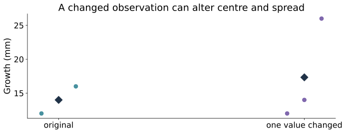
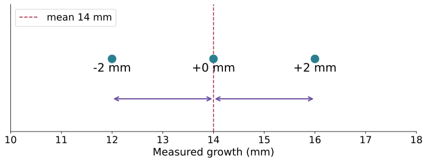
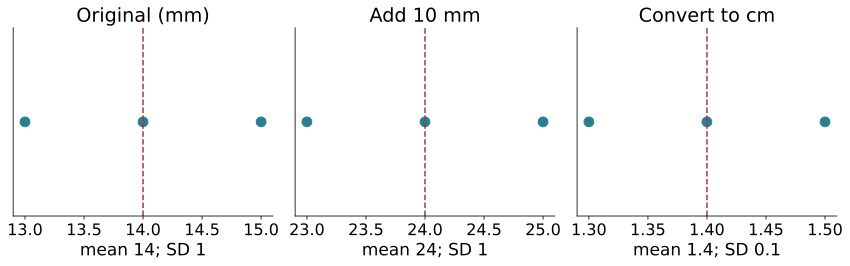
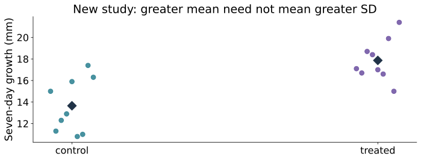

You write in a lab report: “control seedlings grew 15.3 mm on average.” A reader cannot tell whether every plant grew about 15 mm, or whether some grew 8 mm and others nearly 19 mm. Those are very different biological pictures: one unusual plant, or a treatment that makes plants more variable, would be invisible. How do we describe both the typical value and how much plants differ?
The mean and median describe the centre; one unusual value moves them differently.
Deviations from the mean lead to the variance (squared units) and the standard deviation (SD, original units).
Adding a constant or changing units changes the numbers in predictable ways, which makes a useful check.
The SD describes how much individual plants vary. It is not the uncertainty of the mean (Day 14) and does not tell you why plants vary.
This is a concept day with small hand calculations; centre and spread are used in every later day.
The problem: same mean, different plants
Group A: 13, 14, 15 mm. Group B: 8, 14, 20 mm.
Both means are 14 mm.
In A plants are alike (SD 1 mm); in B they differ a lot (SD 6 mm).
Reporting only “mean 14 mm” makes the two groups look identical.
A description needs a centreand a spread.
Two toy growth groups share a mean of 14 millimetres; one set of dots is tightly clustered and the other widely spread.
Mean: add all values, divide by how many. Every value pulls on it.
Median: the middle of the sorted values (the average of the two middle ones if n is even).
One large value moves the mean a lot and the median hardly at all. If it is a real measurement, it stays.

Two sets of three growth values: 12, 14, 16 and 12, 14, 26 millimetres. The diamond marking the mean moves from 14 to 17.33 millimetres when the last value changes.
Spread starts with deviations from the mean
Take three growth values: 12, 14, 16 mm. Their mean is 14 mm.
Each deviation is value minus mean: −2, 0, +2 mm.
Deviations carry the measurement’s units.
Adding them gives 0, always: positives and negatives cancel. So the plain average deviation cannot measure spread.
Squaring removes the sign: 4, 0, 4.

Growth values 12, 14 and 16 millimetres have deviations of minus 2, 0 and plus 2 millimetres from their mean of 14 millimetres.
Variance and standard deviation
For 12, 14, 16 mm:
Squared deviations: 4 + 0 + 4 = 8 mm².
Divide by n − 1 = 2: variance = 4 mm².
Square root: SD = 2 mm.
Variance is in squared units (mm²), hard to picture.
SD is back in mm, the same units as the plants, so it can be read next to the mean.
Dividing by n − 1 rather than n is the convention for estimating spread from a sample; R uses it.
A two-millimetre deviation squared gives four square millimetres; the square root of the variance returns to millimetres.
The twelve control growth values spread along one axis from 8 to 18.7 millimetres, with a vertical line at their mean of 15.28 millimetres.
The 12 plants grew 8.0 to 18.7 mm; none grew exactly 15.28 mm.
Treated plants: mean 21.49 mm, SD 4.87 mm: higher centre and more spread.
Shifts and unit changes: a built-in check
Start with 13, 14, 15 mm (mean 14, SD 1).
Add 10 mm to every value: mean becomes 24 mm, SD stays 1 mm. Moving all plants together does not change how they differ.
Convert to cm (÷ 10): mean 1.4 cm, SD 0.1 cm, variance ÷ 100 (mm² → cm²).
The smaller SD in cm is a different unit, not less variable plants.
If a shift changes your SD, there is a mistake in the code.

The same three values shown in millimetres, shifted by ten millimetres, and converted to centimetres: the centre moves, the spread only changes with the unit.
What the SD does not tell you
In a second class’s study, treated plants have the larger mean (17.87 vs 13.66 mm) but the smaller SD (1.94 vs 2.53 mm).
Centre and spread are separate facts; one does not predict the other.
A larger SD can come from biology (plants really differ) or measurement noise. The SD alone cannot say which.
The SD is about individual plants, not about how precisely we know the mean. That is Day 14.

In the transfer study, treated plants have a higher mean growth than controls but their points are less spread out.
Same tools in another lab: percentage yield
An organic synthesis run (one attempt to make a product) collects some dry product; the starting materials set the most it could give. Runs start from different amounts, so we compare percentage yield = 100 × collected / possible mass.